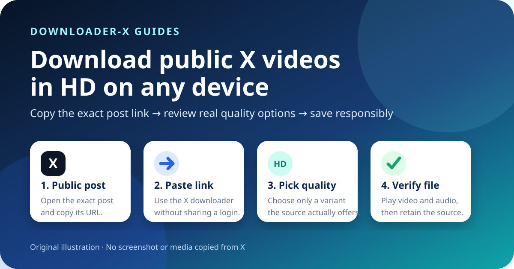
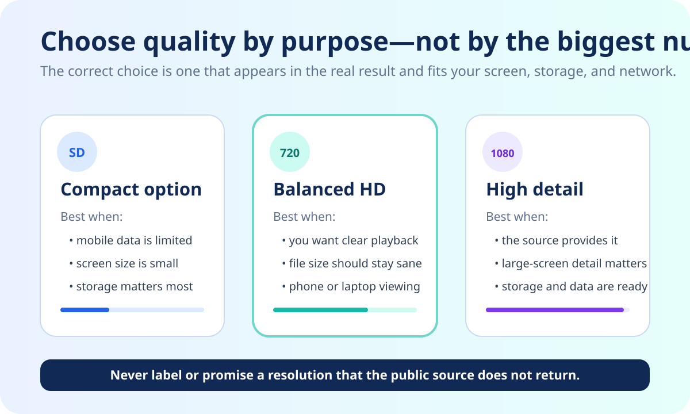
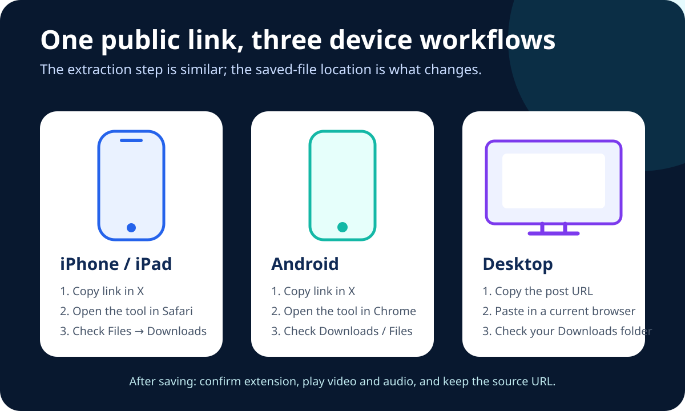
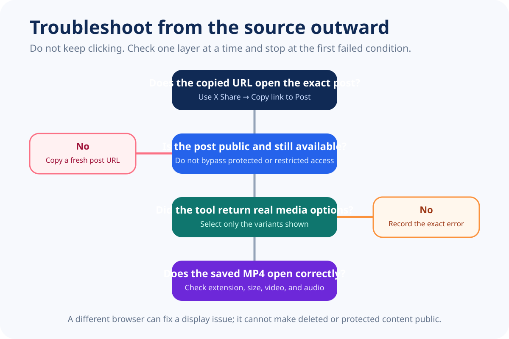

Quick answer
To save an X video that you own or are authorized to download, open the individual public post, use the Share control to copy its permanent URL, paste that URL into the Downloader-X X Video Downloader, and choose one of the real MP4 qualities shown. Save the file, then play the beginning, middle, and end to confirm picture and audio. Keep the source URL and permission record with the file.

1. Confirm that the X post is public and usable
Start with access and permission, not the download button. Open the exact post in a normal browser tab and confirm that the video plays. A public post can be viewed broadly under the account's current visibility settings, while a protected post is limited to approved followers. A downloader should not be used to bypass protection, login requirements, regional restrictions, age gates, deleted content, or subscriber-only access.
Public visibility does not remove copyright or privacy rights. The safest cases are your own upload, a creator-provided download, media covered by a compatible license, or content you have clear permission to save. Permission for offline viewing is not automatically permission to repost, edit, monetize, sell, or place the clip in an advertisement.
Public is not the same as unrestricted
Visibility answers who can watch. Permission answers what you may do with the media. Treat these as separate checks and keep evidence of the source and license.
2. Copy the exact post URL
- Open the individual post. Do not copy a profile, search result, timeline, embedded preview, or home-page address.
- Use the Share control. Select Copy link to Post, which is the link-copying method documented by X Help.
- Inspect the address. A permanent post URL normally points to x.com or twitter.com and contains a status identifier.
- Test it in a new tab. Confirm that it opens the same account, text, thumbnail, and video.
- Retain the source. Save the URL with the downloaded file so attribution and permission can be checked later.
A short or redirected link may still resolve correctly, but test the final destination before processing. If the copied URL opens the wrong post, return to X and copy it again rather than guessing or editing the identifier manually.
3. Paste the verified URL into Downloader-X
Open the X downloader, paste the tested public post URL, and start processing once. Wait for the actual result rather than clicking repeatedly. A normal public-link workflow should not require an X password, two-factor code, exported browser cookie, unknown extension, remote-control session, or identity rotation.
When the result appears, check the title or thumbnail before choosing a file. If it describes another post, stop and copy the source URL again. Choose only a variant displayed by the live result; do not assume that every post includes the same resolution, audio track, or format.
Original 14-second walkthrough
The clip was created specifically for this article. It demonstrates copy, paste, quality review, and file verification without reusing a previous guide's video.
4. Choose the right HD quality
HD is meaningful only when the public source and extraction result actually provide an HD variant. A tool cannot restore details that were never present in the uploaded media. Select the best real option for your purpose rather than automatically choosing the biggest number.

| Option | Good for | Check before saving |
|---|---|---|
| Compact / SD | Small screens, limited mobile data, quick reference copies | Text and faces remain readable for your purpose |
| 720p HD | Phones, laptops, presentations, a balance of clarity and storage | The option appears in the real result and includes the expected audio |
| 1080p Full HD | Larger screens and detail-sensitive use when the source offers it | The source truly provides 1080p; the label is not an unsupported promise |
If two files share a resolution label, bitrate and codec can still differ. Verify the downloaded file instead of judging quality by the filename alone. When audio is important, confirm that the selected option is a combined video-and-audio file or otherwise clearly includes sound.
5. Save on iPhone, Android, Windows, or Mac

iPhone and iPad
Copy the post link in the X app or browser, open the downloader in Safari, paste the URL, and select an available MP4. Browser downloads commonly appear in the Files app, often under Downloads or the location selected in Safari settings. Open the file in Files first. After verifying it, move or share it only when your permission allows that use.
Android
Use the post Share menu to copy the URL, open Downloader-X in a current browser, and choose the real media option returned. Check the browser's Downloads view or the device's Files application. If storage access is blocked, use the browser's normal permission controls instead of installing an unrelated download-manager application.
Windows, macOS, Linux, and ChromeOS
Copy the permanent post URL, paste it into the X downloader, select the needed quality, and use the browser's save control. Check the Downloads folder and browser download history. Rename the file only after confirming that it is a genuine video; changing an HTML error page to an .mp4 extension does not convert it.
6. Verify the saved file
If the result is not a real video, delete it rather than opening an unexpected installer or document. Return to the public source, copy a fresh URL, and repeat the checks. A trustworthy workflow exposes an error instead of presenting a wrong file as a successful download.
Troubleshooting: download does not start or the file is wrong

The URL opens a profile or timeline
Return to the video post and copy its link from the Share menu. A profile identifies an account, not one media item. A timeline or search page can change and is not a stable input for the exact video.
The post opens only while signed in
The media may be protected or restricted. Do not share credentials, export cookies, rotate identities, or attempt to bypass access controls. Ask the owner for an authorized copy or choose content that is genuinely public.
No quality options appear
Confirm that the post still exists, still contains a native video, and opens from the copied URL. Refresh once and try a current browser if the page failed to render. A different browser can fix a display issue; it cannot create media that the source no longer provides.
The browser saves HTML instead of MP4
Delete the incorrect file. Do not rename it to .mp4. Copy the original public post link again and select a verified media option from the real result. Review the browser's download details for the reported type and origin.
The video has no sound
Confirm that the original post has audio and the device is not muted. Test the file in another trusted player. If the selected variant was video-only, return to the result and choose a combined option when one is available.
The same file appears more than once
Check the Downloads folder before retrying and sort by date. Repeated clicks can create duplicate filenames without improving quality. Keep the complete copy and remove incomplete duplicates only after verification.
Security and privacy checks
A normal public-link tool should not require your X password, two-factor code, browser cookies, remote computer access, an executable installer, or a notification subscription. Avoid pages that ask you to disable device protection, install a mysterious codec, run code from a comment, or approve an extension unrelated to the requested file.
Before opening a result, confirm its extension and origin. Video content should not unexpectedly arrive as an application. Keep the browser and operating system current, and use built-in download controls. On shared devices, move authorized files out of public folders and remove sensitive source links from shared histories when appropriate.
Copyright, consent, and attribution
Use media you own, media distributed with a compatible license, or media you have clear permission to save. Retain the source URL, creator, access date, license, and intended use. If the creator removes the post or withdraws permission, review whether you should retain or continue using the copy.
Respect people shown in the video, especially where private locations, personal information, or minors are involved. A public post can still raise consent and privacy concerns. Do not present another creator's work as your own.
For current visibility guidance, read X Help on public and protected posts. For the documented copying method, see how to find a post URL. These pages explain access and links; they do not grant copyright permission for third-party media.
Audit the source before you save anything
A strong X video workflow begins with a source audit. Record the account handle, the visible post date, a short description of the clip, the permanent post URL, and the reason you are allowed to keep a copy. This takes less than a minute and prevents a common problem: a file survives on a device while its origin and permission are forgotten. When a project involves several clips, create a simple text or spreadsheet record rather than relying on memory or an automatically generated filename.
Compare the post opened from the copied URL with the screen where you found it. The account, text, thumbnail, duration, and video subject should match. Be cautious when a quoted post contains one clip while the quoting account adds another; copy the URL for the specific post that actually owns the media you need. The same rule applies to replies and threads. A thread URL identifies one post, not every media item in the conversation.
Also check whether the creator has written usage instructions in the post, profile, linked website, or license statement. A request to credit the creator, avoid commercial use, or refrain from redistribution should remain attached to your project notes. If the permission is unclear, ask before downloading or limit yourself to viewing the public source.
Read quality labels as evidence, not promises
Resolution labels describe pixel dimensions, but they do not prove overall quality. A 1080p file can look soft when the original upload was heavily compressed, while a clean 720p file may look better on a phone. Bitrate, frame rate, codec, source lighting, motion, and prior edits all influence the result. Treat every returned variant as evidence from the current source, then verify it after saving.
For a short reference clip, a balanced HD option can reduce storage and load quickly. For text, diagrams, or a large display, the highest genuinely available resolution may preserve useful detail. Do not upscale a lower-resolution result merely to place “1080p” in the filename. Upscaling changes dimensions but cannot recreate detail that was not present.
Audio deserves its own check. Some media systems store video and audio separately at higher resolutions. Select an option that clearly includes sound when sound matters, and play the saved result before deleting any source notes. If the post itself is silent, the downloaded file should not be advertised as containing audio.
Build a repeatable device workflow
Use one predictable folder for temporary downloads and a separate project folder for verified files. A practical filename can include a short topic, creator handle, source date, and quality, for example event-summary_creator_2026-08-30_720p.mp4. Avoid filenames that expose private information or imply ownership you do not have.
After verification, keep only the variants you need. Multiple quality copies consume space and make later selection confusing. Back up an authorized file only when the project requires it, and protect cloud folders that contain personal or unpublished material. On a shared computer, clear temporary copies and sign out of accounts without erasing records required for permission or attribution.
For editorial, classroom, or research use, keep a short log of what was checked: exact URL, public-access result, selected variant, file size, playback result, rights basis, and any credit requirement. This makes the process reviewable and helps another person understand why the file was retained.
Why a focused X guide is more useful than a generic downloader list
A generic list often repeats phrases such as “fast,” “free,” or “HD” without explaining what happens when a link points to a reply, when 1080p is absent, where an iPhone stores the file, or why an HTML response is not a video. This guide focuses on those decision points. The objective is not to promise every format for every post; it is to help a reader reach a correct, verifiable result with an authorized public source.
The same standard applies when the interface or extraction provider changes. The permanent checks remain stable: identify the exact post, confirm public access, use the real options returned, inspect the saved file, and retain permission information. These checks prevent false success messages from being treated as completed downloads.
Final 60-second checklist
- The URL opens the exact post that contains the video.
- The post is public under normal X visibility rules.
- You own the media, have permission, or understand the applicable license.
- The downloader asks only for the public URL, not account credentials.
- The selected quality is actually shown in the real result.
- The device has enough storage and the browser may download files.
- The saved file has the expected type and a plausible nonzero size.
- Picture and audio play correctly.
- The source and permission record remain with the file.
- You do not republish or commercialize the media beyond your rights.
Frequently asked questions
Can I use both x.com and twitter.com links?
Use the permanent URL for the exact public post and test that it opens the same post before processing.
Why is 1080p not always available?
The source and extraction result determine available resolutions. Choose from the real options shown instead of assuming every post includes Full HD.
Can I download from a protected X account?
No. This guide covers public posts and does not provide a method to bypass protected or restricted access.
Where does the video save on iPhone?
Downloads commonly appear in the Files app, often under Downloads or the location selected in Safari settings.
What if the downloaded file is HTML?
Delete it, copy the original public post URL again, and select a verified video option. Do not rename HTML to MP4.
Does public visibility permit republishing?
No. Public visibility does not grant permission to edit, repost, sell, or commercially use another person's media.
Related guides
Use the verified public post link
Paste the exact public post URL and choose only the media options the source really provides.
Start Downloader-X for X